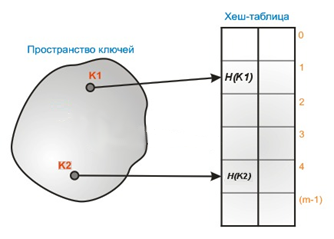
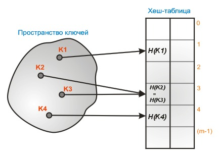
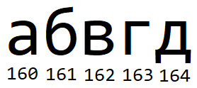
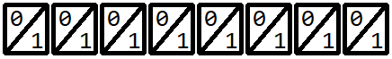
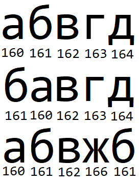
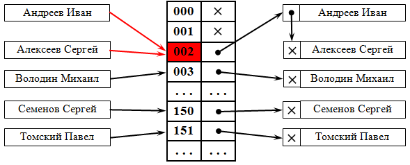
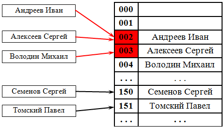

1. Основные понятия организации хеш-таблиц
• Хэширование – это преобразование входного массива данных определенного типа и произвольной длины в выходную битовую строку фиксированной длины (целое число). Такие преобразования также называются хэш-функциями. Хэш-функция — это функция, которая осуществляет преобразование входных данных в число, причём один и тот же набор данных всегда даёт один и тот же результат.
• Хэш-таблица – это структура данных в виде ассоциативного массива, элементами которого являются пары «ключ-значение».

• Хэш-таблица – это структура данных в виде ассоциативного массива, элементами которого являются пары «ключ-значение».
Рисунок 1 – Пример работы ключей
• Хеширование используется для создания ассоциативных массивов, в которых индексами являются не числа, а произвольные значения. Оно применяется в поиске дубликатов в текстах, то есть поиска фрагментов, у которых имеется одинаковое значения хеш-функций. Кроме того, хеширование часто используется для хранения паролей; для создания уникальных идентификаторов, например, если для файла требуется уникальное название, можно посчитать результат обработки хешированием этого файла и сделать его названием. Оно также очень важно для подсчета контрольной суммы текста. Допустим, пользователю необходимо передать по сети какой-либо текст. Вместе с текстом передается контрольная сумма, которая, когда будет принята, сверяется с исходной. И, если суммы не совпадут, это будет означать, что при передаче текста возникли некоторые ошибки.
• Однако, нередко нескольким различным данным, соответственно, различной длины на входе могут соответствовать одинаковые данные на выходе. Ситуации, когда разные данные имеют одинаковое значение хеш-функций, называются коллизиями (рисунок 2). При этом алгоритм хеширования должен стремиться к тому, чтобы разные данные имели разные значения. В редких случаях удается избежать коллизий вообще.

• Однако, нередко нескольким различным данным, соответственно, различной длины на входе могут соответствовать одинаковые данные на выходе. Ситуации, когда разные данные имеют одинаковое значение хеш-функций, называются коллизиями (рисунок 2). При этом алгоритм хеширования должен стремиться к тому, чтобы разные данные имели разные значения. В редких случаях удается избежать коллизий вообще.
Рисунок 2 – Пример коллизии: ключи К2 и K3 в результате хеширования приобрели одинаковые значения хеш-функций
• Хеш-таблица – структура данных, реализующая интерфейс ассоциативного массива. В ней хранятся пары, состоящие из ключа и хешированного ключа. Она позволяет добавлять новые пары, искать и удалять пары по ключу. Хеш-таблица формируется в определенном порядке хеш-функцией.
• Хеш-таблицы часто применяются в базах данных, и, особенно, в языковых процессорах типа компиляторов и ассемблеров, где они повышают скорость обработки таблицы идентификаторов.
• Хеш-таблицы часто применяются в базах данных, и, особенно, в языковых процессорах типа компиляторов и ассемблеров, где они повышают скорость обработки таблицы идентификаторов.
2. Реализация хеш-таблицы и выбор хеш-функции
• Хеш-таблицы должны соответствовать следующим свойствам.
• Прежде чем выполнять операции в хеш-таблице, вычисляется хеш-функция от ключа, результат которой является индексом в исходном массиве.
• Коэффициент заполнения хеш-таблицы - количество хранимых элементов массива, деленное на число возможных значений хеш-функции. Является важным параметром, от которого зависит среднее время выполнения операций.
• Принято считать, что хорошей является такая хеш-функция, которая удовлетворяет следующим условиям. Функция должна: быть простой с вычислительной точки зрения (это зависит от характеристик компьютера), распределять ключи в хеш-таблице наиболее равномерно (зависит от значений данных), стремиться уменьшить число коллизий. Функция не должна отображать какую-либо связь между значениями ключей в связь между значениями адресов.
• Прежде чем выполнять операции в хеш-таблице, вычисляется хеш-функция от ключа, результат которой является индексом в исходном массиве.
• Коэффициент заполнения хеш-таблицы - количество хранимых элементов массива, деленное на число возможных значений хеш-функции. Является важным параметром, от которого зависит среднее время выполнения операций.
• Принято считать, что хорошей является такая хеш-функция, которая удовлетворяет следующим условиям. Функция должна: быть простой с вычислительной точки зрения (это зависит от характеристик компьютера), распределять ключи в хеш-таблице наиболее равномерно (зависит от значений данных), стремиться уменьшить число коллизий. Функция не должна отображать какую-либо связь между значениями ключей в связь между значениями адресов.
2.1 Пример составления функции хеширования
• Пусть имеется некоторый текст. Он состоит из большой последовательности символов, и нужно разработать функцию, которая выдаст практически уникальное значение хеш-функции для данного текста.
• Для простоты возьмем набор символов, представленный на рисунке 3. Каждому символу ниже соответствует свой код по таблице ASCII.

• Для простоты возьмем набор символов, представленный на рисунке 3. Каждому символу ниже соответствует свой код по таблице ASCII.
Рисунок 3 – Символы и соответствующие им коды из таблицы ASCII
• По данной последовательности численных значений каждого символа необходимо составить значение хеш-функции. Составлением будет заниматься хеш-функция, для которой нужно придумать механизм обработки набора символов.
• Необходимо учесть, что хешированный ключ имеет фиксированную длину и, желательно, небольшую. Пусть ключ после хеширования будет состоять из 8 разрядов, то есть 8 битов, принимающих значения от 0 до 1. Соответственно, количество различных значений хеш-функции может достигать 28=256 вариаций (от 0 до 255). На рисунке 4 представлен общий вид значения хеш-функции из восьми разрядов.

• Необходимо учесть, что хешированный ключ имеет фиксированную длину и, желательно, небольшую. Пусть ключ после хеширования будет состоять из 8 разрядов, то есть 8 битов, принимающих значения от 0 до 1. Соответственно, количество различных значений хеш-функции может достигать 28=256 вариаций (от 0 до 255). На рисунке 4 представлен общий вид значения хеш-функции из восьми разрядов.
Рисунок 4 – Общий вид хеш-функции из восьми разрядов
• Исходя из этого, не рационально использовать всю последовательность символов текста в качестве хешированного ключа. Ее необходимо каким-либо образом обработать, например:
c1, c2, c3, …, cn, где c – численное значение символа, а n – количество символов в тексте.
• Можно просуммировать все численные значения:
S=c1+c2+c3+…+cn
• В нашем случае сумма будет равна: (рисунок 3):
S=160+161+162+163+164=810
• 810 гораздо больше 255 – максимально возможного значения данной хеш-функции. Поэтому необходима дополнительная обработка.
• Можно поделить сумму на 2N, где N – количество разрядов числа - результата работы хеш-функции, и найти остаток от деления:
H=S mod 2N
• Тогда:
H=810 mod 256=42
• При нахождении остатка от деления любого целого числа на 2 в степени количества разрядов конечных данных всегда будет получаться число меньшее, чем максимально возможное значение конечных данных. То есть в этой ситуации никогда не будет получено число, превышающее 255.
• Но возникает проблема – возможно появление коллизии: если поменять местами хотя бы два слагаемых в сумме или прибавить какое-либо число к одному из слагаемых, а из другого вычесть его же, сумма не изменится, и, следовательно, конечные данные тоже не изменятся. Действительно:
S1=c1+c2+c3+…+cn; S2=c2+c1+c3+…+cn; S1=S2; H1=H2
S1=c1+c2+c3+…+cn; S2=c1+k+c2-k+c3+…+cn=c1+c2+c3+…+cn; S1=S2; H1=H2
•
• Это означает, что тексты, отличающиеся друг от друга незначительно приобретут одно и то же значение хеш-функции. На рисунке 5 показан первоначальный текст и два текста, полученного из него путем небольших манипуляций. Во втором тексте поменялись местами два символа из первого текста, а в третьем – к численному значению символа г добавилась 3 (г стало ж), а из численного значения д было вычтено 3 (д стало б). Суммы численных значений не изменились, поэтому значение хеш-функции осталось прежним:
S1=160+161+162+163+164=810
S2=161+160+162+163+164=810
S3=160+161+162+166+161=810
S1=S2=S3

c1, c2, c3, …, cn, где c – численное значение символа, а n – количество символов в тексте.
• Можно просуммировать все численные значения:
S=c1+c2+c3+…+cn
• В нашем случае сумма будет равна: (рисунок 3):
S=160+161+162+163+164=810
• 810 гораздо больше 255 – максимально возможного значения данной хеш-функции. Поэтому необходима дополнительная обработка.
• Можно поделить сумму на 2N, где N – количество разрядов числа - результата работы хеш-функции, и найти остаток от деления:
H=S mod 2N
• Тогда:
H=810 mod 256=42
• При нахождении остатка от деления любого целого числа на 2 в степени количества разрядов конечных данных всегда будет получаться число меньшее, чем максимально возможное значение конечных данных. То есть в этой ситуации никогда не будет получено число, превышающее 255.
• Но возникает проблема – возможно появление коллизии: если поменять местами хотя бы два слагаемых в сумме или прибавить какое-либо число к одному из слагаемых, а из другого вычесть его же, сумма не изменится, и, следовательно, конечные данные тоже не изменятся. Действительно:
S1=c1+c2+c3+…+cn; S2=c2+c1+c3+…+cn; S1=S2; H1=H2
S1=c1+c2+c3+…+cn; S2=c1+k+c2-k+c3+…+cn=c1+c2+c3+…+cn; S1=S2; H1=H2
•
• Это означает, что тексты, отличающиеся друг от друга незначительно приобретут одно и то же значение хеш-функции. На рисунке 5 показан первоначальный текст и два текста, полученного из него путем небольших манипуляций. Во втором тексте поменялись местами два символа из первого текста, а в третьем – к численному значению символа г добавилась 3 (г стало ж), а из численного значения д было вычтено 3 (д стало б). Суммы численных значений не изменились, поэтому значение хеш-функции осталось прежним:
S1=160+161+162+163+164=810
S2=161+160+162+163+164=810
S3=160+161+162+166+161=810
S1=S2=S3
Рисунок 5 – Эквивалентные тексты по сумме численных значений символов
• Недопустимо, чтобы текстам, отличающимся незначительно, соответствовали одни и те же значения хеш-функции. Поэтому необходимо модифицировать эту конструкцию, например, введением полиномиального хеша. Сумма будет находиться иным способом и будет представлять собой многочлен степени (n-1).
S*=c1+c2p+c3p2+…+cnpn-1, где p≠0 и выбирается программистом по усмотрению в качестве константы.
• Например:
S*=160+161∙3+162∙32+163∙33+164∙34=19786
• И, если пересчитать аналогично для двух похожих текстов, результат получится другим:
S*2=161+160∙3+162∙32+163∙33+164∙34=19784
S*3=160+161∙3+162∙32+166∙33+161∙34=19625
• Далее, полученную сумму нужно так же поделить на 2N и найти остаток от деления:
H=S* mod 2N
• Таким образом:
H=19786 mod 256=74
• Полученная хеш-функция не решает проблему коллизий полностью, но она избавляется от них лучше, чем версия, предложенная ранее (без использования полинома). Относительно предыдущего варианта она значительно сокращает вероятность возникновения коллизий, хотя допускает их.
S*=c1+c2p+c3p2+…+cnpn-1, где p≠0 и выбирается программистом по усмотрению в качестве константы.
• Например:
S*=160+161∙3+162∙32+163∙33+164∙34=19786
• И, если пересчитать аналогично для двух похожих текстов, результат получится другим:
S*2=161+160∙3+162∙32+163∙33+164∙34=19784
S*3=160+161∙3+162∙32+166∙33+161∙34=19625
• Далее, полученную сумму нужно так же поделить на 2N и найти остаток от деления:
H=S* mod 2N
• Таким образом:
H=19786 mod 256=74
• Полученная хеш-функция не решает проблему коллизий полностью, но она избавляется от них лучше, чем версия, предложенная ранее (без использования полинома). Относительно предыдущего варианта она значительно сокращает вероятность возникновения коллизий, хотя допускает их.
2.2 Реализация хеш-таблицы в программе
• Предположим, в хеш-таблице будут храниться некоторые данные о людях. Например, ФИО, дата рождения, № телефона.
• Подготовим класс Hash.
• Начнем с его приватных полей и функций. Пусть таблица имеет фиксированный размер, который измеряется максимальным количеством ячеек:
int max_size = 20; //максимальный размер таблицы (необязательно)
• Понадобится три списка, заполненных, соответственно, именами, фамилиями, отчествами – впоследствии они вместе с датой и номером телефона случайно будут формировать элементы будущей таблицы случайным образом.
• Подготовим класс Hash.
• Начнем с его приватных полей и функций. Пусть таблица имеет фиксированный размер, который измеряется максимальным количеством ячеек:
int max_size = 20; //максимальный размер таблицы (необязательно)
• Понадобится три списка, заполненных, соответственно, именами, фамилиями, отчествами – впоследствии они вместе с датой и номером телефона случайно будут формировать элементы будущей таблицы случайным образом.
vector<string> surnames = {
"Иванов","Петров","Сидоров","Тесла","Маск","Эйнштейн","Ньютон","Гук","Кюри","Сталин","Ленин","Маркс"
};
vector<string> names = {
"Иван","Петр","Сидор","Никола","Илон","Альберт","Исаак","Роберт","Мария","Иосиф","Владимир","Карл","Алексей","Михаил","Дмитрий"
};
vector<string> patronymics = {
"Иванович","Петрович","Сидорович","Николаевич","Илонович","Альбертович","Исаакович","Робертович","Маркович","Иосифович","Владимирович","Карлович","Алексеевич","Михаилович","Дмитриевич"
}; 3. Разрешение коллизий
• Коллизии необходимо разрешать, потому что они осложняют использование хеш-таблицы, нарушая однозначность соответствия между данными и их хешированными аналогами.
• Для этого отводится место для хранения ключей, которые претендуют на ячейку хеш-таблицы, которая уже занята ключом, добавленным ранее. Этот механизм называется методом цепочек. Либо, если все ключи элементов известны заранее, соответственно, нет необходимости распределять элементы по ячейкам непосредственно в процессе добавления в таблицу, можно создать некоторую инъективную хеш-функцию, которая будет распределять ключи по ячейкам хеш-таблицы без коллизии. Такие хеш-таблицы, не нуждающиеся в механизме разрешения коллизий, называются хеш-таблицами с прямой или открытой адресацией.
• Начнем с его приватных полей и функций. Пусть таблица имеет фиксированный размер, который измеряется максимальным количеством ячеек:
• Рассмотрим два предложенных способа подробнее.
• Следовательно, если посчитать элементы для каждой из цепочек, состоящих более, чем из одного элемента, вычтя единицу из каждой такой суммы, а затем сложить все эти результаты, то получится общее число коллизий.
• Чтобы внести в таблицу данные, нужно добавить элемент с предварительно найденным значением хеш-функции в конец или начало цепочки с соответствующим хеш-значением.
• Чтобы найти и удалить какие-либо данные в таблице, достаточно найти цепочку элементов, хеш-значение которой совпадает с хеш-значением исходных данных. Затем, если цепочка состоит из одного элемента, можно удалить всю цепочку, в противном случае необходимо организовать поиск и в самой цепочке уже по ключу, а не по хешированным данным и удалить элемент.
• При открытой адресации, если ячейка с вычисленным индексом занята, то просматриваются следующие записи таблицы по порядку до тех пор, пока не будет найден ключ K или пустая позиция в таблице. На рисунке 7 разрешение коллизий осуществляется методом открытой адресации. Два значения претендуют на ключ 002, для одного из них находится первое свободное (еще не занятое) место в таблице.
• При любом методе разрешения коллизий необходимо ограничить длину поиска элемента. Если для поиска элемента необходимо более трех-четырех сравнений, то эффективность использования такой хеш-таблицы пропадает и ее следует реструктуризировать (найти другую хеш-функцию), чтобы минимизировать количество сравнений для поиска элемента.
• Работа алгоритма поиска считается успешной, если все ячейки хеш-таблицы просмотрены ровно по одному разу.
• Удаление элементов в такой схеме несколько затруднено. В таких случаях обычно заводится логический флажок для каждой из ячеек. Флажок обозначает, удален элемент либо нет. Необходимо изменить процедуру поиска существующего элемента так, чтобы удаленные ячейки считались занятыми. Процедура добавления должна учитывать удаленные элементы, принимая их в качестве свободных и сбрасывая значения флага при добавлении.
• Для этого отводится место для хранения ключей, которые претендуют на ячейку хеш-таблицы, которая уже занята ключом, добавленным ранее. Этот механизм называется методом цепочек. Либо, если все ключи элементов известны заранее, соответственно, нет необходимости распределять элементы по ячейкам непосредственно в процессе добавления в таблицу, можно создать некоторую инъективную хеш-функцию, которая будет распределять ключи по ячейкам хеш-таблицы без коллизии. Такие хеш-таблицы, не нуждающиеся в механизме разрешения коллизий, называются хеш-таблицами с прямой или открытой адресацией.
• Начнем с его приватных полей и функций. Пусть таблица имеет фиксированный размер, который измеряется максимальным количеством ячеек:
• Рассмотрим два предложенных способа подробнее.
3.1 Метод цепочек
Рисунок 6 – Метод цепочек
• Каждая ячейка массива является указателем на связный список (цепочку) пар ключ-значение, соответствующих одному и тому же хеш-значению ключа (рисунок 6). Коллизии приводят к тому, что появляются цепочки длиной более одного элемента.• Следовательно, если посчитать элементы для каждой из цепочек, состоящих более, чем из одного элемента, вычтя единицу из каждой такой суммы, а затем сложить все эти результаты, то получится общее число коллизий.
• Чтобы внести в таблицу данные, нужно добавить элемент с предварительно найденным значением хеш-функции в конец или начало цепочки с соответствующим хеш-значением.
• Чтобы найти и удалить какие-либо данные в таблице, достаточно найти цепочку элементов, хеш-значение которой совпадает с хеш-значением исходных данных. Затем, если цепочка состоит из одного элемента, можно удалить всю цепочку, в противном случае необходимо организовать поиск и в самой цепочке уже по ключу, а не по хешированным данным и удалить элемент.
3.2 Метод открытой адресации
Рисунок 7 – Метод открытой адресации
• При открытой адресации, если ячейка с вычисленным индексом занята, то просматриваются следующие записи таблицы по порядку до тех пор, пока не будет найден ключ K или пустая позиция в таблице. На рисунке 7 разрешение коллизий осуществляется методом открытой адресации. Два значения претендуют на ключ 002, для одного из них находится первое свободное (еще не занятое) место в таблице.
• При любом методе разрешения коллизий необходимо ограничить длину поиска элемента. Если для поиска элемента необходимо более трех-четырех сравнений, то эффективность использования такой хеш-таблицы пропадает и ее следует реструктуризировать (найти другую хеш-функцию), чтобы минимизировать количество сравнений для поиска элемента.
• Работа алгоритма поиска считается успешной, если все ячейки хеш-таблицы просмотрены ровно по одному разу.
• Удаление элементов в такой схеме несколько затруднено. В таких случаях обычно заводится логический флажок для каждой из ячеек. Флажок обозначает, удален элемент либо нет. Необходимо изменить процедуру поиска существующего элемента так, чтобы удаленные ячейки считались занятыми. Процедура добавления должна учитывать удаленные элементы, принимая их в качестве свободных и сбрасывая значения флага при добавлении.
4. Алгоритмы хеширования
• Существует несколько типов функций хеширования, каждая из которых имеет свои преимущества и недостатки и основана на представлении данных. Приведем обзор и анализ некоторых наиболее простых из применяемых на практике хеш-функций.
• Перед созданием таблицы выделяется память для хранения всех ее элементов. Ячейки изначально заполнены пустыми записями. Затем записи будут внесены в таблицу в то место, которое определил исходный ключ.
• При поиске ключ используется как адрес и по этому адресу выбирается запись. Если выбранная запись пустая, то записи с таким ключом вообще нет в таблице. Таблицы прямого доступа очень эффективны в использовании, но, к сожалению, область их применения весьма ограничена.
• Но таблицы прямого доступа применимы только для тех задач, в которых множество всех теоретических возможных значений ключей записи совпадает по численности с множеством ячеек памяти, которые должны быть выделены для этих записей. Другими словами, сколько ключей, столько и записей.
• На практике же чаще всего приходится сталкиваться с ситуацией, когда записей получается намного меньше, чем ключей. Например, если ключом будет фамилия, то, даже если ограничить ее длину десятью символами кириллицы, получится 3310 возможных значений ключей. Пусть ресурсы вычислительной системы и позволяют выделить место для хранения такого количества записей, но значительная часть этого пространства все равно окажется заполненной пустыми записями. Фактическое множество ключей не сможет прикрыть полностью пространство ключей.
• В целях экономии памяти можно назначать размер пространства записей равным размеру фактического множества записей или превосходящим его незначительно. В этом случае необходимо иметь некоторую функцию, обеспечивающую отображение точки из пространства ключей в точку в пространстве записей, то есть, преобразование ключа в адрес записи: A=H(X), где A – адрес, X – ключ.
• Идеальной хеш-функцией является инъективная функция, которая для любых двух неодинаковых ключей дает неодинаковые адреса.
• Если ключей меньше, чем элементов массива, то в качестве хеш-функции можно использовать деление по модулю, то есть остаток от деления целочисленного ключа
• На практике, метод деления – самый распространенный
• Пусть ключ будет четырехзначным числом. Его можно возвести в квадрат и взять из получившегося числа все разряды, начиная, например, с сотен и заканчивая сотнями тысяч. Эти разряды составят новое число, которое и будет являться результатом хеш-функци. Так, число 1234 при возведении в квадрат даст число 1522756, из которого в качестве значения хеш-функции можно извлечь число 5227.
• Пусть ключ – это строка, состоящая из фамилии, имени и отчества, разделенными пробелами. Функция хеширования разделит строку на части по пробелам. То есть имя будет находиться в одной части, фамилия – во второй, отчество – в третьей. В дальнейшем, с каждой из частей можно выполнить различные операции, применительно к численным кодам каждого из символов. Затем скомпоновать получившиеся результаты, выбрав определенный способ и получить адрес на выходе.
• Простейший пример: 12345678910= 25937424510. Выделим четыре наименьших разряда, поделим 4510 на 10000, получив 0.4510, округлим вверх до 0.5 и умножим на 4510, отбросив мантиссу: 2255.
4.1 Таблица прямого доступа
• Таблица прямого доступа является простейшей организацией таблицы, так как обеспечивает идеально быстрый поиск. В ней ключ – это уникальный адрес записи или то, что может быть преобразовано в адрес, так что никогда не возникнет ситуации, когда два разных ключа будут давать одинаковое значение хеш-функции в результате хеширования.• Перед созданием таблицы выделяется память для хранения всех ее элементов. Ячейки изначально заполнены пустыми записями. Затем записи будут внесены в таблицу в то место, которое определил исходный ключ.
• При поиске ключ используется как адрес и по этому адресу выбирается запись. Если выбранная запись пустая, то записи с таким ключом вообще нет в таблице. Таблицы прямого доступа очень эффективны в использовании, но, к сожалению, область их применения весьма ограничена.
• Но таблицы прямого доступа применимы только для тех задач, в которых множество всех теоретических возможных значений ключей записи совпадает по численности с множеством ячеек памяти, которые должны быть выделены для этих записей. Другими словами, сколько ключей, столько и записей.
• На практике же чаще всего приходится сталкиваться с ситуацией, когда записей получается намного меньше, чем ключей. Например, если ключом будет фамилия, то, даже если ограничить ее длину десятью символами кириллицы, получится 3310 возможных значений ключей. Пусть ресурсы вычислительной системы и позволяют выделить место для хранения такого количества записей, но значительная часть этого пространства все равно окажется заполненной пустыми записями. Фактическое множество ключей не сможет прикрыть полностью пространство ключей.
• В целях экономии памяти можно назначать размер пространства записей равным размеру фактического множества записей или превосходящим его незначительно. В этом случае необходимо иметь некоторую функцию, обеспечивающую отображение точки из пространства ключей в точку в пространстве записей, то есть, преобразование ключа в адрес записи: A=H(X), где A – адрес, X – ключ.
• Идеальной хеш-функцией является инъективная функция, которая для любых двух неодинаковых ключей дает неодинаковые адреса.
4.2 Метод остатков от деления
• Простейшей хеш-функцией является деление по модулю числового значения ключаKey на размер пространства записи HashTableSize. Результат интерпретируется как адрес записи. Следует иметь в виду, что такая функция хорошо соответствует первому, но плохо – последним трем требованиям к хеш-функции и сама по себе может быть применена лишь в очень ограниченном диапазоне реальных задач.
• Если ключей меньше, чем элементов массива, то в качестве хеш-функции можно использовать деление по модулю, то есть остаток от деления целочисленного ключа
Key на размерность массива HashTableSize, то есть: Key % HashTableSize.
• На практике, метод деления – самый распространенный
// функция создания хеш-таблицы метод деления по модулю
int Hash(int Key, int HashTableSize) {
return Key % HashTableSize;
}4.3 Метод функции середины квадрата
• Следующей хеш-функцией является функция середины квадрата. Значение ключа преобразуется в число, это число затем возводится в квадрат, из него выбираются несколько средних цифр и интерпретируются как адрес записи.• Пусть ключ будет четырехзначным числом. Его можно возвести в квадрат и взять из получившегося числа все разряды, начиная, например, с сотен и заканчивая сотнями тысяч. Эти разряды составят новое число, которое и будет являться результатом хеш-функци. Так, число 1234 при возведении в квадрат даст число 1522756, из которого в качестве значения хеш-функции можно извлечь число 5227.
4.4 Метод свертки
• Еще одна из хеш-функций – это функция свертки. Ключ в своем цифровом представлении должен быть разбит на несколько частей. Длина каждой части равна длине требуемого адреса. Над частями могут быть произведены различные арифметические или логические операции, затрагивающие все число или только его разряды. В результате части при компоновке могут быть интерпретированы как адрес.• Пусть ключ – это строка, состоящая из фамилии, имени и отчества, разделенными пробелами. Функция хеширования разделит строку на части по пробелам. То есть имя будет находиться в одной части, фамилия – во второй, отчество – в третьей. В дальнейшем, с каждой из частей можно выполнить различные операции, применительно к численным кодам каждого из символов. Затем скомпоновать получившиеся результаты, выбрав определенный способ и получить адрес на выходе.
4.5 Метод перевода в другую систему счисления
• В качестве хеш-функции также применяют функцию преобразования системы счисления. Ключ, записанный как число в некоторой системе счисленияP, интерпретируется как число в системе счисления Q<P. Например, Q=P-1. Далее, можно выделить разряды из получившегося числа, взяв их в качестве нового числа, и провести с ними какие-либо манипуляции.
• Простейший пример: 12345678910= 25937424510. Выделим четыре наименьших разряда, поделим 4510 на 10000, получив 0.4510, округлим вверх до 0.5 и умножим на 4510, отбросив мантиссу: 2255.
5. Виды хеширования
5.1 Открытое хеширование
• При открытом хешировании множество значений разбивается на конечное число классов (сегментов). ДляN классов строится определенная хеш-функция таким образом, что для любого элемента Х исходного множества хеш-функция обязательно принимает в качестве одного из аргументов номер класса (они могут быть пронумерованы от 0 до N-1). Таблица классов имеет N записей, содержащих заголовки для N цепочек (списков), в которые помещаются элементы соответствующего класса.
• Если в каждом из классов примерно одинаковое количество элементов, то в этом случае списки должны быть наиболее короткими относительно общего числа классов. Если имеется
M элементов, то средняя длина списка будет составлять M/N элементов.
5.2 Закрытое хеширование
• При закрытом (внутреннем) хешировании в хеш-таблице хранятся непосредственно сами элементы, а не заголовки списков элементов, и пустые, пока не занятые ничем сегменты. Поэтому в каждой записи может храниться не более одного элемента. При закрытом хешировании применяется методика повторного хеширования.• При поиске элемента
Х необходимо просмотреть все местоположения, пока не будет найден элемент Х или пока не встретится пустой сегмент.
• Если осуществляется попытка добавления элемента в класс, в котором уже имеется элемент - возникает коллизия, то происходит повторное хеширование относительно нового количества элементов так, чтобы перераспределить номера элементов. Каждое местоположение последовательно проверяется, пока для добавляемого элемента не найдется свободное. Если свободных мест не окажется, это будет означать, что таблица заполнена, соответственно, элемент
Х добавить нельзя.
• Существует три метода повторного хеширования, помогающих определить местоположение добавляемых элементов, чьи хеш-значения совпали с одним из элементов в таблице.
1. Линейное опробование сводится к последовательному перебору сегментов таблицы с некоторым фиксированным шагом:
A=H(X)+Ci, где i – номер попытки разрешить коллизию, C – константа, определяющая шаг перебора.
Если шаг равен единице, происходит последовательный перебор всех сегментов после текущего. 2. Квадратичное опробование отличается формулой и зависит от попытки разрешить коллизию нелинейно.
A=H(X)+Ci +Di2, где i – номер попытки разрешить коллизию, C и D – константы.
Благодаря нелинейности квадратичного опробования уменьшается число проб при большом числе похожих значений хеш-функций. Но чем больше проб, тем больше вероятность того (растет в геометрической прогрессии), что получившееся значение адреса будет вне табличного пространства.
3. Двойное хеширование заключается в суммировании значений двух хеш-функций, работающих с одним и тем же элементом: A=H1(X)+H2(X)
По мере заполнения хещ-таблицы могут возникнуть коллизии. Вследствие этого численное значение адреса может быть за пределами допустимых адресов. Эту проблему можно решить увеличением длины таблицы. Однако это хоть и сократит число коллизий и ускорит работу с хеш-таблицей, но приведет к нерациональному расходованию памяти.